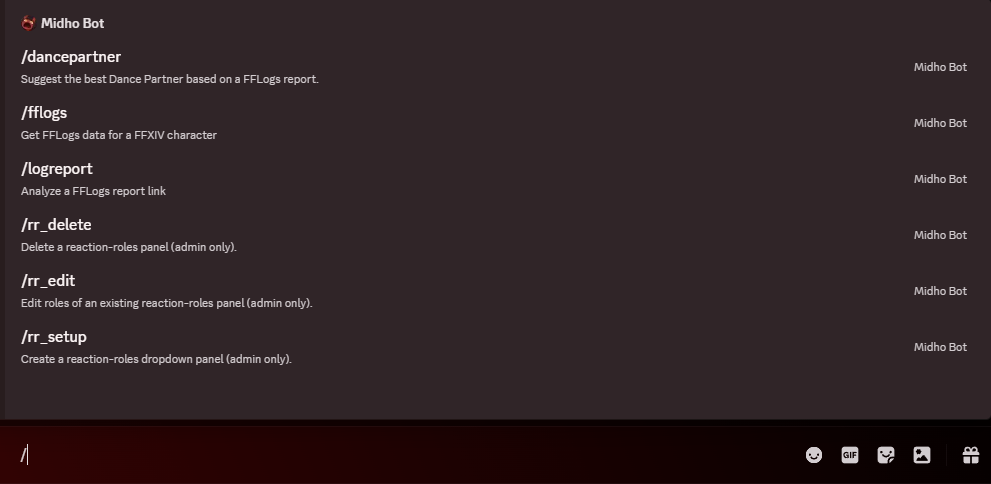
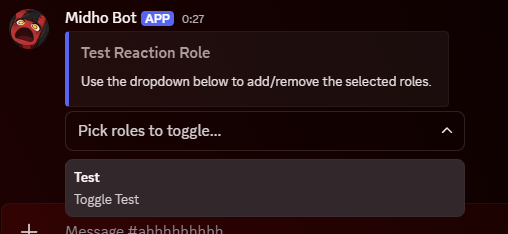

PuffPastry Parser (Discord Bot)
Project Overview
A specialized Discord bot built to integrate Final Fantasy XIV combat data into Discord communities. It combines real-time API data fetching with advanced server management tools.
Note: The current version uses JSON for data persistence, which is efficient for small-to-medium communities. For large-scale deployment across thousands of servers, migration to a database solution (like PostgreSQL) would be recommended.

Key Features
- FFLogs Integration (GraphQL): Connects to the FFLogs v2 API to fetch complex combat reports.
- /logreport: Retrieves fight durations, kill/wipe status, and player rankings, displaying them in a paginated UI.
- /dancepartner: Analyzes damage data to calculate "rDPS" gains, mathematically suggesting the best teammate for buffs.
- Reaction Role Systems: Built a persistent, GUI-based role manager using Discord's modern Select Menus and Buttons (not just old-school emoji reactions). Includes an Admin Setup Wizard using Modals to create panels without writing code.
- Data Persistence: Uses JSON storage (rr_panels.json) to remember role panel configurations even after the bot restarts.

Technical Skills
- Asynchronous Networking: Uses aiohttp to handle GraphQL queries to FFLogs without freezing the bot.
- Discord UI Kit: Implemented discord.ui.View, Select, and Modal classes to create interactive, persistent interfaces.
- Pagination Logic: Created a custom EncounterPaginator class to handle large datasets (multiple boss fights) by splitting them into navigable pages.